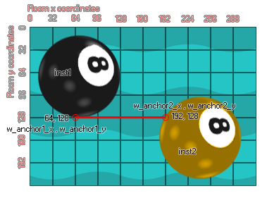

physics_joint_rope_create(inst1, inst2, w_anchor1_x, w_anchor1_y, w_anchor2_x, w_anchor2_y, maxlength, col)
| Argumento | Descripción |
|---|---|
| inst1 | La primera instancia para conectarse con la articulación |
| inst2 | La segunda instancia para conectarse con la articulación |
| w_anchor1_x | La primera coordenada x para la articulación, en el mundo del juego |
| w_anchor1_y | La primera coordenada y para la unión, dentro del mundo del juego |
| w_anchor2_x | La segunda coordenada x para la articulación, dentro del mundo del juego |
| w_anchor2_y | la segunda coordenada y para la unión, dentro del mundo del juego |
| maxlength | La longitud máxima que la articulación puede "estirar" |
| col | Si las dos instancias pueden colisionar (verdadero) o no (falso) |
Devoluciones: índice de la articulación
Una unión de cuerda es una que se utiliza para unir dos instancias que desea mantener a una distancia constante, independientemente de las otras fuerzas que actúen sobre ella. Con una junta a distancia, puede obtener "estiramiento de la articulación" donde los dos dispositivos se comportarán de forma extraña si se aplica demasiada tensión a la articulación, sin embargo la articulación del cable no lo hace y no se estirará más allá de la longitud máxima definida. Cuando creas una unión de cuerda, las dos instancias ya deben estar creadas y tienen un accesorio asignado, luego defines los dos puntos de anclaje en las coordenadas de la sala. El primer punto de anclaje se conecta a la instancia 1, el segundo punto de anclaje se conecta a la instancia 2 y la distancia y el argumento de longitud máxima establece la restricción de longitud máxima en la junta. La imagen a continuación muestra cómo funciona esto:

Como puede ver, los puntos de anclaje se especifican como coordenadas de la sala, por lo que se debe tener cuidado al definirlos, especialmente si las instancias se crean al mismo tiempo que las juntas en lugar de colocarlas en la sala a través del editor de sala. También debe tener en cuenta que las uniones se crean independientemente del tamaño del sprite de las instancias o los accesorios que han unido. Por lo tanto, si crea una unión de cuerda en algún lugar que no sea el origen de la instancia, sigue siendo válida y restringirá las dos instancias relativas a la posición en la que se creó. Si configura el valor "col" para true entonces las dos instancias pueden interactuar y colisionar entre sí, pero solo si tienen eventos de colisión, sin embargo, si está configurado para false, no colisionarán sin importar qué.
var mainFixture, o_id;
mainFixture = physics_fixture_create();
physics_fixture_set_circle_shape(mainFixture,
sprite_get_width(sprite_index) / 2);
o_id=instance_create_layer(x+300, y, "Instances", obj_Rudder);
physics_fixture_bind(mainFixture, id);
physics_fixture_bind(mainFixture, o_id);
physics_joint_rope_create(id, o_id, x + 50, y, o_id.x - 50, o_id.y,
300, 0);
physics_fixture_delete(mainFixture);
El código anterior crea y define un nuevo accesorio y luego crea una instancia de "obj_Rudder". El accesorio se asigna a la instancia que ejecuta el código, así como a la nueva creación y se crea una unión de cuerda entre ellos. Finalmente, el dispositivo se elimina ya que ya no es necesario.